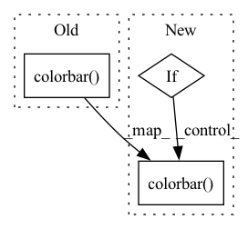

Pattern ID :29108
Before Change
axes[1].set_ylabel("y [m]")
axes[1].set_zlabel("z [m]")
fig.colorbar( mat, ax=axes, fraction=0.021)
plt.draw()
plt.savefig(str(logdir / f"reconstruction_error_{idx}.pdf"))
if self.remote is not True:After Change
plt.show()
plt.close()
if ground_truth_elevation_map is not None:
fig = plt.figure(figsize=[1.75 * 6.4, 1.25 * 4.8])
plt.clf()
axes = []
axes.append(fig.add_subplot(121))
axes[0].set_title("Reconstruction error")
// matshow plots x and y swapped
mat = axes[0].matshow(np.swapaxes(np.abs(reconstructed_elevation_map - ground_truth_elevation_map), 0, 1),
cmap=plt.get_cmap("RdYlGn_r"))
axes[0].plot(robot_plot_x, robot_plot_y, marker="*", color="blue")
axes[0].grid(False)
axes.append(fig.add_subplot(122, projection="3d"))
axes[1].set_title("Reconstruction error")
axes[1].plot_surface(x_3d, y_3d, np.abs(reconstructed_elevation_map - ground_truth_elevation_map),
cmap=plt.get_cmap("RdYlGn_r"))
axes[1].set_xlabel("x [m]")
axes[1].set_ylabel("y [m]")
axes[1].set_zlabel("z [m]")
fig.colorbar( mat, ax=axes, fraction=0.021)
plt.draw()
plt.savefig(str(logdir / f"reconstruction_error_{idx}.pdf"))
if self.remote is not True:In pattern: SUPERPATTERN
Frequency: 3
Non-data size: 3
Instances Fragment ID: 85790017
Project Name: mstoelzle/solving-occlusion
Commit Name: 7ad7713f8c6ee7e49262e65307c1467bc7a56159
Time: 2020-10-21
Author: maximilian@stoelzle.ch
File Name: src/learning/visualization/results_plotter.py
M Class Name: ResultsPlotter
N Class Name: ResultsPlotter
M Method Name: save_samples(3)
N Method Name: save_samples(3)
M Parent Class:
N Parent Class:
M File Name: src/learning/visualization/results_plotter.py
N File Name: src/learning/visualization/results_plotter.py
M Start Line: 52
M End Line: 174
N Start Line: 54
N End Line: 189
Before Change
axes[1, 1].plot(robot_position[0], robot_position[1], marker="*", color="blue")
axes[1, 1].grid(False)
fig.colorbar( mat, ax=axes.ravel().tolist(), fraction=0.045)
plt.draw()
plt.savefig(str(logdir / f"error_uncertainty_{sample_idx}.pdf"))
if remote is not True:After Change
axes[1, 1].plot(robot_position[0], robot_position[1], marker="*", color="blue")
axes[1, 1].grid(False)
if indiv_vranges is False:
fig.colorbar( mat, ax=axes.ravel().tolist(), fraction=0.045)
plt.draw()
plt.savefig(str(logdir / f"error_uncertainty_{sample_idx}.pdf"))
if remote is not True: Fragment ID: 85790016
Project Name: mstoelzle/solving-occlusion
Commit Name: 669a1fba198838f5e5db5dd9ce27d155646744a9
Time: 2020-12-17
Author: maximilian@stoelzle.ch
File Name: src/learning/visualization/sample_plotter.py
M Class Name: AnonimousClass
N Class Name: AnonimousClass
M Method Name: draw_error_uncertainty_plot(10)
N Method Name: draw_error_uncertainty_plot(9)
M Parent Class:
N Parent Class:
M File Name: src/learning/visualization/sample_plotter.py
N File Name: src/learning/visualization/sample_plotter.py
M Start Line: 14
M End Line: 83
N Start Line: 11
N End Line: 99
Before Change
cos_sims = torch.cat(self.cos_sims)
plt.clf()
plt.matshow(cos_sims, cmap="RdYlBu_r", vmin=-1, vmax=1)
plt.colorbar()
plt.savefig(f"imgs/{self.subset}_{num_updates}.png")
self.cos_sims = []
self.subset = NoneAfter Change
if not os.path.exists("imgs"):
os.mkdir("imgs")
if not torch.distributed.is_initialized():
import matplotlib.pyplot as plt
cos_sims = torch.cat(self.cos_sims)
plt.clf()
plt.matshow(cos_sims, cmap="RdYlBu_r", vmin=-1, vmax=1)
plt.colorbar()
plt.savefig(f"imgs/{self.subset}_{num_updates}.png")
self.cos_sims = []
self.subset = None Fragment ID: 85790018
Project Name: jwoo5/fairseq-signals
Commit Name: 1f50a30a9660f0a24c87a6a886ff19a45d1e7e4b
Time: 2021-12-28
Author: ojw0123@korea.ac.kr
File Name: fairseq_signals/tasks/ecg_identification.py
M Class Name: ECGIdentificationTask
N Class Name: ECGIdentificationTask
M Method Name: post_validate(5)
N Method Name: post_validate(5)
M Parent Class: ECGPretrainingTask
N Parent Class: ECGPretrainingTask
M File Name: fairseq_signals/tasks/ecg_identification.py
N File Name: fairseq_signals/tasks/ecg_identification.py
M Start Line: 167
M End Line: 174
N Start Line: 166
N End Line: 177